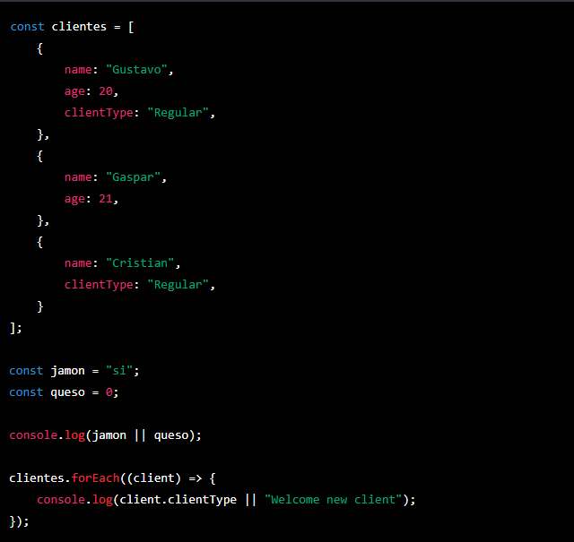
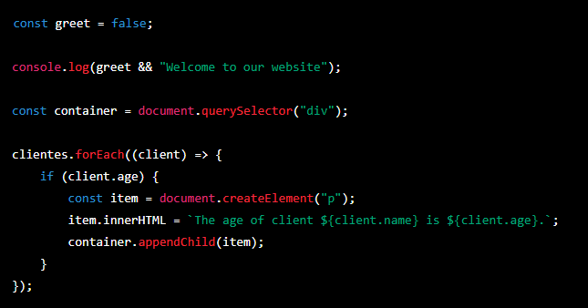
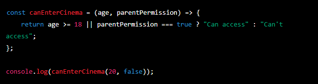
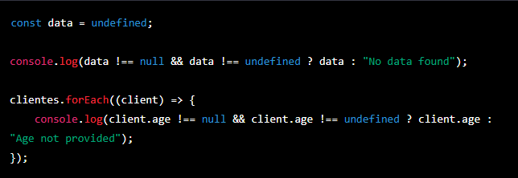
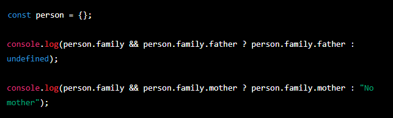
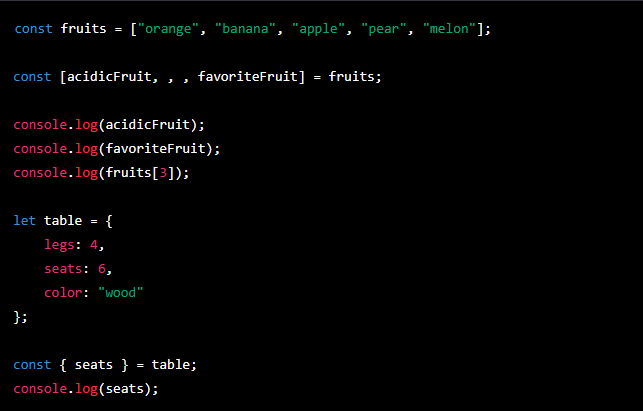
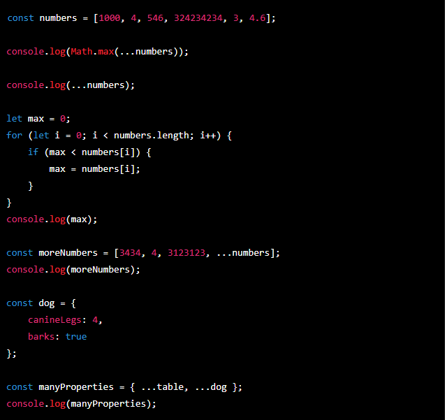

Temario de la clase:
- Operadores y condicionales avanzados
- Desestructuracion
- Spread
Sugar Syntax
La sintaxis reducida o "sugar syntax" es un término que hace referencia a una forma simplificada de escribir código que es más fácil de leer y entender para los desarrolladores. Esto se logra mediante el uso de abreviaciones o notaciones alternativas que tienen el mismo significado que las sintaxis tradicionales, pero son más concisas y fáciles de digerir.
Por ejemplo, en JavaScript, el uso de la sintaxis de "arrow function" es un ejemplo de sugar syntax, ya que es una forma más corta y concisa de escribir funciones anónimas en comparación con la sintaxis tradicional de "function".
Unario
En JavaScript, los operadores unarios son aquellos que operan sobre un solo operando o valor. Los operadores de incremento y decremento son ejemplos de operadores unarios.
El operador de incremento "++" incrementa en 1 el valor de una variable. Por ejemplo, si tenemos una variable "i" con el valor de 5, el código "i++" aumentaría el valor de "i" a 6. Es equivalente a escribir "i = i + 1".
El operador de decremento "--" disminuye en 1 el valor de una variable. Por ejemplo, si tenemos una variable "i" con el valor de 5, el código "i--" disminuiría el valor de "i" a 4. Es equivalente a escribir "i = i - 1".
Es importante tener en cuenta que el operador de incremento y decremento pueden ser colocados tanto antes como después del operando, lo que cambia el resultado. Por ejemplo, si se tiene una variable "i" con el valor de 5, "i++" incrementará el valor de "i" a 6 pero devolverá el valor anterior (5) y "++i" devolverá el valor incrementado (6).
Operadores de Asignación Shorthand
Estos operadores te permiten asignar nuevos valores a variables existentes de manera más concisa y eficiente. Operadores como += y -=, son una simplificación de la asignación tradicional y permiten escribir código más legible y fácil de entender.
Los operadores de asignación shorthand, como el operador += y -=, y los operadores unarios, como el operador ++ y --, están relacionados en el sentido que ambos son utilizados para modificar el valor de una variable. Sin embargo, su uso y su funcionamiento son diferentes.
Los operadores de asignación shorthand se utilizan para asignar un nuevo valor a una variable existente mediante la realización de una operación aritmética. Por ejemplo, el operador += se utiliza para sumar un valor a una variable existente y el operador -= se utiliza para restar un valor a una variable existente.
Por otro lado, los operadores unarios incremento y decremento (++ y --) son utilizados para incrementar o disminuir en 1 el valor de una variable.
Evaluaciones de Cortocircuito
La evaluación de cortocircuito es una técnica utilizada en programación para evitar evaluaciones innecesarias y mejorar el rendimiento del código. Esto se logra mediante el uso de operadores lógicos, como el operador OR (||) o el operador AND (&&).
OR LOGICO En el ejemplo dado, se utiliza el operador OR (||) para devolver el primer valor verdadero. En este caso, la variable "jamon" tiene el valor "si", que es considerado verdadero, por lo que el operador OR devuelve el valor "si".
En el ejemplo se ve como en el forEach, se busca en cada elemento del arreglo si tiene una propiedad "cliente", si es asi se imprime ese valor, sino se imprime "Bienvenido nuevo cliente", este es un ejemplo de como se utiliza el operador OR (||) para retornar el primer valor verdadero y evitar errores.
AND LOGICOEn el ejemplo dado, se utiliza el operador AND (&&) para devolver el último operando que sea true. En este caso, la variable "saludar" tiene el valor false, por lo que el operador AND no ejecuta la segunda acción y no se imprime "Bienvenido a la web" en consola.
En el forEach, se busca en cada elemento del arreglo si tiene una propiedad "edad", si es asi se crea un nuevo elemento "p" y se le asigna el valor de la edad del cliente y se añade al div, si no tiene esa propiedad no se hace nada, ese es un ejemplo de como se utiliza el operador AND (&&) para ejecutar algo solo si la condicion es verdadera.
Condicionales avanzados: el operador ternario
El operador ternario es un operador de tres operandos en JavaScript que permite evaluar condiciones y devolver un resultado en función de si la condición es verdadera o falsa. Es similar a una estructura de control if-else en su funcionamiento.
El operador ternario consta de una condición seguida de dos valores separados por el signo "?" y ":" respectivamente. La condición se evalúa primero, y si es verdadera se devuelve el primer valor, de lo contrario se devuelve el segundo valor.
En el ejemplo dado, se utiliza el operador ternario para refactorizar la función validarEdad y crear una nueva función validarCine, donde se evalua si la edad es mayor o igual a 18 o si el permiso de los padres es verdadero, si es asi entonces "Puede acceder" sino "No puede acceder".
Nullish
El operador de fusión nullish (??) es un operador de JavaScript que se utiliza para evaluar si un valor es null o undefined. Si el valor es null o undefined, devuelve el segundo operando, de lo contrario, devuelve el primer operando. Es similar al operador OR lógico (||) pero tiene un comportamiento diferente cuando se evalúa un valor undefined o null.
En el ejemplo dado, se utiliza el operador de fusión nullish (??) para evaluar si la variable "data" es undefined, en caso de serlo imprime "No se hallan datos" y en el forEach se evalua si el cliente tiene edad si no es asi imprime "No tiene edad"
El encadenamiento opcional
El encadenamiento opcional (?.) es una característica de JavaScript que permite acceder a las propiedades anidadas de un objeto sin generar un error en caso de que esa propiedad no exista. Utilizando el operador "?" antes de la notación de punto "." se evita que el código genere un error y devuelva "undefined" en su lugar.
En el ejemplo dado, se utiliza el encadenamiento opcional (?.) para acceder a la propiedad "padre" de la propiedad "familia" del objeto "persona". Si "familia" no existe, el código devuelve "undefined" en lugar de generar un error.
Además, se puede combinar el uso del encadenamiento opcional con otros operadores como el operador ternario o el operador de fusión nullish (??) para manejar de manera adecuada los valores "undefined" en caso de que una propiedad no exista.
Desestructuracion
La destructuración es una técnica en JavaScript que permite desempaquetar valores de objetos y arrays, y asignarlos a variables independientes. Es una forma de acceder a los valores contenidos en un objeto o array de manera rápida y sencilla.
En el ejemplo dado, se utiliza destructuración para extraer valores específicos de un array de frutas y de un objeto "mesa". En el primer bloque de código se extraen los valores en las posiciones 0, 2 y 3 del array y se asignan a las variables frutaAcida, frutaFavorita y frutas[3] respectivamente. Luego, en el segundo bloque se extrae el valor de la propiedad "asientos" del objeto "mesa" y se asigna a la variable "asientos".
Además, se puede utilizar un alias para asignar un nuevo nombre a una variable al momento de extraer un valor de un objeto, como se ve en la línea const { patas : cantidadDePatas } = mesa. En este caso, se extrae el valor de la propiedad "patas" del objeto "mesa" y se asigna a la variable "cantidadDePatas"
Spread Operator
El operador de propagación (spread operator) es una característica de JavaScript que permite expandir elementos iterables, como arrays o cadenas de texto, para tratarlos de manera individual. En el ejemplo dado, se utiliza el spread operator para pasar cada elemento de un array de números como argumento individual a la función Math.max() y así obtener el número mayor.
Además, el spread operator puede utilizarse para copiar arreglos o objetos, como se ve en el ejemplo donde se copia el arreglo "numeros" a un nuevo arreglo "masNumeros" y tambien se copian las propiedades de dos objetos en un solo objeto "muchasPropiedades".
